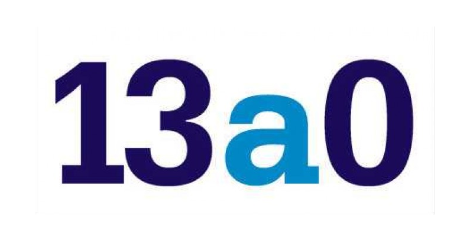

<!doctype html>
<html lang="es">
<head>
<meta charset="utf-8">
<title>Partido en vivo 13a0</title>
<link rel="preconnect" href="https://fonts.googleapis.com">
<link href="https://fonts.googleapis.com/css2?family=Archivo:wght@500..900&family=Bitter:wght@700;800&display=swap" rel="stylesheet">
<style>
  /* Pantalla de partido en vivo para OBS — 1920 x 1080, fondo transparente afuera del marco.
     Se arma sola según la competencia del partido:
       · Uruguay (Primera): partido + panel que rota (resultados de la fecha, tabla del torneo,
         anual y promedios, todas EN VIVO: suman el resultado parcial).
       · Copa AUF: solo el partido, más grande (los datos salen de la pestaña "partido_vivo").
       · Libertadores / Sudamericana: partido + global de la serie + panel con las llaves
         (o resultados) de las dos copas y, en fase de grupos, la tabla del grupo.
     Datos: ESPN (en vivo) y la pestaña "partido_vivo" de la planilla (qué partido mostrar,
     carga a mano y correcciones). Abajo quedan libres los 70 px de la cinta del ticker. */
  :root { --negro:#000; --blanco:#fff; --azul:#180B5B; --celeste:#0086C3; --amarillo:#F9BE02; --rojo:#C5021E; --gris:#6E6A86; --linea:#e9e7f0;
          --grotesca:"Archivo","Helvetica Neue",Arial,sans-serif; --slab:"Bitter",Georgia,serif; }
  * { box-sizing:border-box; margin:0; padding:0; }
  html, body { width:100%; height:100%; overflow:hidden; background:transparent; }
  .pant { position:absolute; left:0; top:0; width:1920px; height:1080px; transform-origin:0 0; font-family:var(--grotesca); color:var(--azul); -webkit-font-smoothing:antialiased; }
  .negro { position:absolute; left:0; top:0; width:1920px; height:1010px; background:var(--negro); }
  .b { position:absolute; } .ro{background:var(--rojo)} .am{background:var(--amarillo)} .ce{background:var(--celeste)} .az{background:var(--azul)} .bl{background:var(--blanco)}

  /* cinta de arriba */
  .vivo { position:absolute; display:flex; align-items:center; gap:14px; padding:0 22px; color:#fff; font:800 36px/1 var(--slab); letter-spacing:.06em; text-transform:uppercase; white-space:nowrap; }
  .vivo i { width:22px; height:22px; background:#fff; animation:titila 1.6s steps(2, start) infinite; }
  @keyframes titila { 50% { opacity:.15; } }
  .torneo { position:absolute; display:flex; align-items:center; padding:0 28px; font:800 32px/1 var(--grotesca); white-space:nowrap; overflow:hidden; }
  .torneo span { color:var(--gris); font-weight:600; margin-left:14px; }
  .logo { position:absolute; background:var(--blanco); display:flex; align-items:center; justify-content:center; overflow:hidden; padding:10px 18px; }
  .logo img { max-width:100%; max-height:100%; object-fit:contain; }
  .logo .barras { position:absolute; inset:0; pointer-events:none; }
  .logo .barras i { position:absolute; left:0; width:100%; height:34%; transform:translateX(-102%); }
  .logo .barras i:nth-child(1) { top:0; background:var(--rojo); } .logo .barras i:nth-child(2) { top:33%; background:var(--amarillo); } .logo .barras i:nth-child(3) { top:66%; background:var(--celeste); }
  .logo.anim .barras i { animation:barrer 1.5s cubic-bezier(.75,0,.2,1) both; }
  .logo.anim .barras i:nth-child(2) { animation-delay:.1s; } .logo.anim .barras i:nth-child(3) { animation-delay:.2s; }
  @keyframes barrer { 0% { transform:translateX(-102%); } 42%,58% { transform:translateX(0); } 100% { transform:translateX(102%); } }

  /* el partido */
  .estadio { position:absolute; display:flex; align-items:center; justify-content:space-between; gap:20px; padding:0 28px; color:#fff; font:800 28px/1 var(--grotesca); letter-spacing:.08em; text-transform:uppercase; white-space:nowrap; }
  .estadio span:first-child { overflow:hidden; text-overflow:ellipsis; }
  .marcador { position:absolute; background:var(--blanco); display:grid; grid-template-columns:1fr auto 1fr; align-items:center; padding:0 40px; }
  .eq { display:flex; flex-direction:column; align-items:center; gap:18px; min-width:0; }
  .eq img { width:190px; height:190px; object-fit:contain; }
  .eq b { font:900 40px/1.05 var(--grotesca); letter-spacing:-.02em; text-align:center; }
  .res { display:flex; flex-direction:column; align-items:center; gap:14px; padding:0 20px; }
  .res .min { background:var(--amarillo); font:900 46px/1 var(--grotesca); padding:14px 28px; white-space:nowrap; }
  .res .min.fin { background:var(--azul); color:#fff; }
  .res .goles { display:flex; align-items:center; gap:22px; font:900 180px/1 var(--grotesca); letter-spacing:-.04em; }
  .res .goles i { width:46px; height:16px; background:var(--azul); }
  .res .goles.previa { font-size:90px; }
  .res .serie { background:var(--azul); color:#fff; font:800 26px/1 var(--grotesca); padding:10px 16px; white-space:nowrap; }
  .res .pen { background:var(--celeste); color:#fff; font:800 24px/1 var(--grotesca); padding:8px 14px; }
  .marcador.ancho .eq img { width:240px; height:240px; } .marcador.ancho .eq b { font-size:52px; } .marcador.ancho .res .goles { font-size:220px; }
  .incid { position:absolute; background:var(--azul); color:#fff; display:grid; grid-template-columns:1fr 1fr; gap:0 40px; padding:24px 40px; overflow:hidden; }
  .incid ul { list-style:none; display:flex; flex-direction:column; gap:12px; min-width:0; }
  .incid ul.der { align-items:flex-end; }
  .incid li { display:flex; align-items:center; gap:14px; font:700 28px/1 var(--grotesca); white-space:nowrap; }
  .incid li .t { font-weight:900; min-width:64px; } .incid ul.der li .t { text-align:right; }
  .incid li .tag { font:900 19px/1 var(--grotesca); letter-spacing:.1em; padding:8px 10px; }
  .incid li .gol { background:var(--amarillo); color:var(--azul); } .incid li .roja { background:var(--rojo); color:#fff; }
  .incid li .amarilla { background:#FFE14D; color:var(--azul); width:22px; height:30px; padding:0; }
  .incid li .tag.roja.carta { width:22px; height:30px; padding:0; }
  .incid li .cambio { background:var(--celeste); color:#fff; }
  .incid li .sale { font-weight:500; opacity:.75; }
  .incid li { max-width:100%; overflow:hidden; } .incid li .tag { flex:none; } .incid li .t { flex:none; }
  /* alineaciones (panel que rota) */
  .alin { display:grid; grid-template-columns:1fr 1fr; gap:18px; }
  .alin h4 { font:900 22px/1.1 var(--grotesca); margin-bottom:4px; } .alin h4 small { font-weight:700; color:var(--gris); margin-left:6px; }
  .alin ol { list-style:none; display:flex; flex-direction:column; gap:5px; }
  .alin li { display:flex; align-items:center; gap:8px; font:700 19px/1.15 var(--grotesca); white-space:nowrap; overflow:hidden; }
  .alin li b { flex:none; width:30px; text-align:right; font-weight:900; color:var(--rojo); }
  .alin li.salio { opacity:.55; } .alin li i { font-style:normal; font-size:15px; color:var(--celeste); font-weight:800; }
  .alin .entraron { margin-top:8px; font:700 16px/1.3 var(--grotesca); color:var(--gris); white-space:normal; }
  .incid.chico li { font-size:23px; gap:10px; } .incid.chico { gap:0 24px; }
  /* cancha con las formaciones (columna derecha, fija): visitante arriba, local abajo */
  .cancha-cab { position:absolute; display:flex; align-items:center; justify-content:space-between; padding:0 12px; gap:8px; color:#fff; font:800 26px/1 var(--slab); letter-spacing:.05em; text-transform:uppercase; white-space:nowrap; }
  .cancha-cab span { font:800 22px/1 var(--grotesca); letter-spacing:.04em; }
  .cancha { position:absolute; background:#17345a; overflow:hidden; }
  .lc .ln { position:absolute; border:3px solid rgba(255,255,255,.28); }
  .lc .jug { position:absolute; width:96px; margin-left:-48px; display:flex; flex-direction:column; align-items:center; gap:3px; }
  .lc .jug .cir { position:relative; width:40px; height:40px; border-radius:50%; display:flex; align-items:center; justify-content:center; font:900 20px/1 var(--grotesca); box-shadow:0 2px 0 rgba(0,0,0,.25); }
  .lc .jug.L .cir { background:var(--amarillo); color:var(--azul); } .lc .jug.V .cir { background:#fff; color:var(--azul); }
  .cancha-eq { position:absolute; display:flex; align-items:center; gap:10px; padding:0 14px; background:var(--azul); color:#fff; box-shadow:inset 0 -3px 0 rgba(0,0,0,.25); }
  .cancha-eq img { width:32px; height:32px; object-fit:contain; flex:none; } .cancha-eq b { flex:1; min-width:0; font:900 20px/1 var(--grotesca); text-transform:uppercase; letter-spacing:.01em; white-space:nowrap; overflow:hidden; text-overflow:ellipsis; }
  .cancha-eq.abajo { border-bottom:4px solid var(--azul); }
  .cancha-eq span { flex:none; font:900 22px/1 var(--grotesca); padding:4px 10px; background:rgba(0,0,0,.18); }
  .cancha-cab .ce { display:flex; align-items:center; gap:7px; min-width:0; max-width:49%; } .cancha-cab .ce img { width:30px; height:30px; object-fit:contain; flex:none; }
  .cancha-cab .ce b { font:800 15px/1.05 var(--grotesca); letter-spacing:.02em; overflow:hidden; display:-webkit-box; -webkit-line-clamp:2; -webkit-box-orient:vertical; }   /* nombre en hasta dos líneas */
  .cancha-cab .ce:last-child { text-align:right; } .cancha-cab .ce span { flex:none; color:var(--amarillo); }
  /* noticia en la parte derecha, con la estética de la Tanda: bloques blancos sobre negro; arriba la foto (mismo encuadre vertical que la Tanda) y el titular; abajo los dos párrafos */
  .not-lado { position:absolute; inset:-12px -20px; background:var(--negro); display:flex; flex-direction:column; gap:16px; color:var(--azul); }
  .not-lado .nar { flex:none; display:flex; gap:16px; }
  .not-lado .nf { flex:none; width:40%; aspect-ratio:504/920; background:var(--azul) center/cover no-repeat; position:relative; }
  .not-lado .nf::after { content:""; position:absolute; left:0; right:0; bottom:0; height:14px; background:var(--amarillo); }
  .not-lado .ncab { flex:1; min-width:0; background:var(--blanco); border-top:14px solid var(--rojo); padding:20px 22px; display:flex; align-items:flex-end; }
  .not-lado .nar.sin .ncab { min-height:200px; }
  .not-lado h4 { font:900 38px/1.04 var(--grotesca); letter-spacing:-.025em; text-wrap:balance; } .not-lado h4 em { font-style:normal; color:var(--rojo); }
  .not-lado .nt { flex:1; min-height:0; background:var(--blanco); overflow:hidden; position:relative; }
  .not-lado .nt::after { content:""; position:absolute; left:0; right:0; bottom:0; height:20px; background:linear-gradient(rgba(255,255,255,0), var(--blanco)); }
  .not-lado .nti { padding:22px 26px 28px; will-change:transform; min-height:100%; display:flex; flex-direction:column; justify-content:center; }
  .not-lado p { font:500 24px/1.36 var(--grotesca); color:var(--azul); } .not-lado p:first-child { font-weight:700; } .not-lado p + p { margin-top:14px; }
  .lc .jug .nom { max-width:96px; background:rgba(8,6,40,.72); color:#fff; font:800 15px/1 var(--grotesca); padding:3px 6px; white-space:nowrap; overflow:hidden; text-overflow:ellipsis; }
  .lc .jug.entro .cir { box-shadow:0 0 0 3px var(--celeste), 0 2px 6px rgba(0,0,0,.35); }
  .lc .ic { position:absolute; display:flex; align-items:center; gap:2px; font:800 13px/1 var(--grotesca); color:#fff; }
  .lc .ic.a { left:-18px; top:-6px; } .lc .ic.b { right:-22px; top:-6px; } .lc .ic.c { right:-24px; bottom:-6px; }
  .lc .ic .am { width:12px; height:17px; background:#FFE14D; } .lc .ic .ro { width:12px; height:17px; background:var(--rojo); }
  .lc .ic .bal { width:20px; height:20px; border-radius:50%; background:url("data:image/svg+xml,%3Csvg xmlns='http://www.w3.org/2000/svg' viewBox='0 0 20 20'%3E%3Ccircle cx='10' cy='10' r='9.2' fill='%23fff' stroke='%23111' stroke-width='1.3'/%3E%3Cpath d='M10 6.1l3.3 2.4-1.3 3.9H8L6.7 8.5z' fill='%23111'/%3E%3Cpath d='M10 6.1V1.3M13.3 8.5l4.5-1.6M12 12.4l2.8 4M8 12.4l-2.8 4M6.7 8.5L2.2 6.9' stroke='%23111' stroke-width='1.2' fill='none'/%3E%3C/svg%3E") center/contain no-repeat; filter:drop-shadow(0 1px 1px rgba(0,0,0,.5)); }   /* pelota de fútbol */
  .lc .ic .cb { width:20px; height:20px; border-radius:50%; background:var(--celeste); display:flex; align-items:center; justify-content:center; font-size:13px; }
  .lc .ic small { background:rgba(8,6,40,.8); padding:2px 3px; font-size:12px; }
  .incid.tres { padding:18px 22px; gap:0 18px; } .incid.tres ul { gap:8px; } .incid.tres li { font-size:19px; gap:7px; } .incid.tres li .t { min-width:40px; }
  .incid.tres li .tag { font-size:13px; padding:5px 6px; } .incid.tres li .amarilla, .incid.tres li .tag.roja.carta { width:14px; height:20px; padding:0; } .incid.tres li .sale { display:none; }
  .marcador.medio { padding:0 24px; } .marcador.medio .eq img { width:130px; height:130px; } .marcador.medio .eq b { font-size:30px; }
  .marcador.medio .res { padding:0 10px; } .marcador.medio .res .min { font-size:38px; padding:12px 20px; } .marcador.medio .res .goles { font-size:140px; gap:14px; } .marcador.medio .res .goles.previa { font-size:76px; }
  .marcador.medio .res .goles i { width:36px; height:13px; }
  .angosto .tabla { font-size:20px; } .angosto .tabla td:nth-child(2) { max-width:220px; } .angosto .tabla td img { width:24px; height:24px; margin-right:8px; } .angosto .tabla th { font-size:14px; padding:4px 5px 8px; } .angosto .tabla td { padding:0 5px; }
  .angosto .fila { grid-template-columns:28px 1fr auto 1fr 28px; gap:6px; font-size:18px; height:52px; } .angosto .fila img { width:28px; height:28px; } .angosto .fila .sc { min-width:64px; padding:6px 8px; }
  .angosto .ll-eq { font-size:18px; } .angosto .ll-sc span { min-width:96px; font-size:17px; } .angosto .panel-cab { font-size:22px; }
  .cambios { position:absolute; background:var(--blanco); padding:10px 14px; display:grid; grid-template-columns:minmax(0,1fr) minmax(0,1fr); gap:0 14px; overflow:hidden; }
  .cambios > div { min-width:0; overflow:hidden; }
  .cambios h5 { font:800 14px/1 var(--grotesca); letter-spacing:.12em; text-transform:uppercase; color:var(--gris); margin-bottom:6px; white-space:nowrap; overflow:hidden; text-overflow:ellipsis; }
  .cambios div div { display:flex; align-items:center; gap:6px; font:700 16px/1.35 var(--grotesca); white-space:nowrap; overflow:hidden; }
  .cambios .sups { display:block !important; white-space:normal !important; font:700 12px/1.3 var(--grotesca); color:var(--azul); margin-top:3px; } .cambios .sups i { font-style:normal; color:var(--gris); font-weight:800; }
  .cambios b { font-weight:900; min-width:34px; } .cambios .ent { color:#1a9a4a; font-weight:900; } .cambios .sal { color:var(--gris); }
  /* alineación fija abajo del marcador (cuando hay): marcador más bajo y los 11 de cada uno con sus goles, tarjetas y cambios */
  .marcador.bajo .eq { gap:10px; } .marcador.bajo .eq img { width:120px; height:120px; } .marcador.bajo .eq b { font-size:34px; }
  .marcador.bajo .res { gap:8px; } .marcador.bajo .res .min { font-size:34px; padding:10px 20px; } .marcador.bajo .res .goles { font-size:120px; } .marcador.bajo .res .goles.previa { font-size:70px; }
  .marcador.bajo .res .goles i { width:34px; height:12px; }
  .alf { position:absolute; background:var(--azul); color:#fff; display:grid; grid-template-columns:1fr 1fr; gap:0 34px; padding:16px 30px; overflow:hidden; }
  .alf h4 { display:flex; align-items:baseline; gap:10px; font:900 22px/1 var(--grotesca); color:var(--amarillo); letter-spacing:.04em; text-transform:uppercase; margin-bottom:8px; white-space:nowrap; overflow:hidden; }
  .alf h4 small { font-weight:700; font-size:17px; color:#fff; opacity:.7; text-transform:none; letter-spacing:0; }
  .alf ol { list-style:none; display:flex; flex-direction:column; gap:3px; }
  .alf li { display:flex; align-items:center; gap:9px; font:700 20px/1.25 var(--grotesca); white-space:nowrap; overflow:hidden; min-width:0; }
  .alf li b { flex:none; width:28px; text-align:right; font-weight:900; color:var(--amarillo); }
  .alf li .nm { overflow:hidden; text-overflow:ellipsis; } .alf li.salio .nm { opacity:.55; }
  .alf .ev { flex:none; display:inline-flex; align-items:center; gap:4px; font:800 15px/1 var(--grotesca); }
  .alf .ev i { display:inline-block; } .alf .ev .g { background:var(--amarillo); color:var(--azul); font-style:normal; font-size:12px; letter-spacing:.06em; padding:3px 5px; }
  .alf .ev .am { width:12px; height:16px; background:#FFE14D; } .alf .ev .ro { width:12px; height:16px; background:var(--rojo); }
  .alf .ev .sa { color:var(--celeste); font-style:normal; }
  .alf .mas { margin-top:6px; font:700 16px/1.3 var(--grotesca); color:#fff; opacity:.8; white-space:normal; }

  /* panel que rota */
  .panel-cab { position:absolute; display:flex; align-items:center; justify-content:space-between; padding:0 24px; color:#fff; font:800 28px/1 var(--slab); letter-spacing:.05em; text-transform:uppercase; white-space:nowrap; }
  .panel-cab .pts { display:flex; gap:8px; } .panel-cab .pts i { width:14px; height:14px; border:3px solid #fff; } .panel-cab .pts i.on { background:#fff; }
  .panel { position:absolute; background:var(--blanco); padding:12px 20px; overflow:hidden; }
  .panel .hoja { position:absolute; inset:12px 20px; display:flex; flex-direction:column; transition:transform .7s cubic-bezier(.75,0,.2,1); }
  .panel .hoja.entra { transform:translateX(110%); } .panel .hoja.sale { transform:translateX(-110%); }
  .panel h3 { font:800 20px/1 var(--grotesca); letter-spacing:.14em; text-transform:uppercase; color:#fff; background:var(--azul); align-self:flex-start; padding:8px 12px; margin:4px 0 6px; }
  .fila { display:grid; grid-template-columns:36px 1fr auto 1fr 36px; align-items:center; gap:10px; height:58px; border-bottom:3px solid var(--linea); font:800 23px/1.05 var(--grotesca); }
  .fila img { width:36px; height:36px; object-fit:contain; }
  .fila .n1 { text-align:right; } .fila .sc { background:var(--azul); color:#fff; padding:8px 12px; font-weight:900; min-width:84px; text-align:center; white-space:nowrap; }
  .fila .sc.hora { background:var(--celeste); font-size:20px; } .fila .sc.vivo-sc { background:var(--rojo); }
  .tabla { width:100%; border-collapse:collapse; font:700 23px/1 var(--grotesca); }
  .tabla th { font:800 17px/1 var(--grotesca); letter-spacing:.12em; color:var(--gris); text-align:right; padding:4px 8px 10px; }
  .tabla th:nth-child(2) { text-align:left; }
  .tabla td { height:40px; padding:0 8px; text-align:right; border-bottom:2px solid #eeecf3; white-space:nowrap; }
  .tabla td:nth-child(2) { text-align:left; max-width:340px; overflow:hidden; text-overflow:ellipsis; } .tabla td img { width:28px; height:28px; object-fit:contain; vertical-align:middle; margin-right:12px; }
  .tabla td.pos { width:52px; text-align:center; color:#fff; background:var(--celeste); font-weight:900; }
  .tabla tr.lider td.pos { background:var(--amarillo); color:var(--azul); } .tabla tr.baja td.pos { background:var(--rojo); }
  .tabla td.p { font-weight:900; color:var(--azul); }
  /* tabla en vivo: cuadradito rojo = está jugando ahora; flecha = sube o baja con el parcial */
  .tabla .punto { display:inline-block; width:12px; height:12px; background:var(--rojo); margin-left:10px; vertical-align:middle; }
  .tabla .flecha { font-size:16px; margin-left:8px; vertical-align:middle; } .tabla .flecha.sube { color:#1a9a4a; } .tabla .flecha.baja { color:var(--rojo); }
  .llave { display:grid; grid-template-columns:1fr auto 1fr; align-items:center; gap:10px; padding:14px 0 10px; border-bottom:3px solid var(--linea); }
  .ll-eq { display:flex; align-items:center; gap:10px; font:800 23px/1.1 var(--grotesca); min-width:0; } .ll-eq.der { justify-content:flex-end; text-align:right; }
  .ll-eq img { width:40px; height:40px; object-fit:contain; flex:none; }
  .ll-sc { display:flex; flex-direction:column; gap:6px; align-items:center; } .ll-sc span { background:var(--azul); color:#fff; font:800 20px/1 var(--grotesca); padding:7px 12px; min-width:130px; text-align:center; white-space:nowrap; }
  .ll-sc span.hora { background:var(--celeste); } .ll-sc span.vivo-sc { background:var(--rojo); }
  .ll-nota { grid-column:1 / -1; text-align:center; font:700 18px/1 var(--grotesca); color:var(--gris); letter-spacing:.04em; }
  .vacio { margin:auto; font:800 30px/1.3 var(--slab); color:var(--gris); text-align:center; }

  /* WhatsApp y redes, abajo */
  .redes { position:absolute; background:var(--azul); color:#fff; display:flex; align-items:center; justify-content:center; padding:0 22px; overflow:hidden; }
  .redes .lst { display:flex; gap:44px; white-space:nowrap; }
  .redes .v { display:inline-flex; align-items:center; gap:8px; }
  .redes .v b { margin-left:6px; font-weight:800; font-size:28px; color:#fff; }
  .ico { flex:none; display:inline-flex; align-items:center; justify-content:center; width:40px; height:40px; color:#fff; }
  .ico svg { width:28px; height:28px; }
  .ico.ce { background:var(--celeste); } .ico.ro { background:var(--rojo); } .ico.am { background:var(--amarillo); color:var(--azul); } .ico.ne { background:var(--negro); }
  /* tomas de tabla para una cámara (cam-M/N/O o ?tabla=torneo|anual|promedios): solo la tabla, a la derecha */
  .solo-tabla .panel-cab { font-size:30px; } .solo-tabla .tabla { font-size:26px; } .solo-tabla .tabla td { height:44px; } .solo-tabla .tabla td img { width:32px; height:32px; }
  .solo-tabla .cola { position:absolute; background:var(--amarillo); }
  .espera { position:absolute; display:flex; flex-direction:column; align-items:center; justify-content:center; gap:20px; background:var(--blanco); text-align:center; }
  .espera b { font:900 64px/1 var(--grotesca); letter-spacing:-.02em; } .espera span { font:700 30px/1.3 var(--grotesca); color:var(--gris); }
</style>
</head>
<body>
<svg width="0" height="0" style="position:absolute" aria-hidden="true">
  <symbol id="i-wa" viewBox="0 0 24 24"><circle cx="12.4" cy="11.4" r="8.2" fill="none" stroke="currentColor" stroke-width="2.4"/><path d="M3.6 21.4 5.2 15.9 8.9 19.4Z" fill="currentColor"/><path d="M9.2 7.6c-.6.2-1 .9-1 1.6 0 3.3 3.3 6.6 6.6 6.6.7 0 1.4-.4 1.6-1l.2-1.1-2.3-1.1-1 1.1c-1.5-.6-2.6-1.7-3.2-3.2l1.1-1-1.1-2.3Z" fill="currentColor"/></symbol>
  <symbol id="i-ig" viewBox="0 0 24 24"><rect x="3.2" y="3.2" width="17.6" height="17.6" rx="5" fill="none" stroke="currentColor" stroke-width="2.4"/><circle cx="12" cy="12" r="4.1" fill="none" stroke="currentColor" stroke-width="2.4"/><circle cx="17.2" cy="6.8" r="1.5" fill="currentColor"/></symbol>
  <symbol id="i-x" viewBox="0 0 24 24"><path d="M3.8 3.8h4.8l11.6 16.4h-4.8Z" fill="currentColor"/><path d="M19.6 3.8 13.2 11M4.4 20.2l6.6-7.4" stroke="currentColor" stroke-width="2.2"/></symbol>
  <symbol id="i-tt" viewBox="0 0 24 24"><path d="M13.6 3h3.1c.2 2 1.6 3.5 3.6 3.7v3.1a6.8 6.8 0 0 1-3.6-1.1v6.4a5.6 5.6 0 1 1-5.6-5.6l.9.1v3.2a2.5 2.5 0 1 0 1.6 2.3Z" fill="currentColor"/></symbol>
  <symbol id="i-fb" viewBox="0 0 24 24"><path d="M13.6 21v-7.6h2.7l.4-3.1h-3.1V8.4c0-.9.3-1.5 1.6-1.5h1.7V4.1c-.3 0-1.3-.1-2.4-.1-2.4 0-4 1.4-4 4.1v2.2H8v3.1h2.5V21Z" fill="currentColor"/></symbol>
</svg>
<div class="pant" id="pant"></div>
<script src="config.js?v=20261030b"></script>
<script src="escudos.js?v=20261030b"></script>
<script src="nombres.js?v=20261030b"></script>
<script src="comun.js?v=20261030b"></script>
<script>
(function () {
  const T = window.Ticker, C = T.config, CP = C.partido || {};
  const pant = document.getElementById("pant");
  const SEG_PANEL = (CP.segundosPorPanel || 15) * 1000, SEG_NOTICIA = Math.max(SEG_PANEL, 22000);   // las noticias quedan más tiempo: se leen título y dos párrafos
  const SEG_LEER = (CP.leerCadaSegundos || 30) * 1000;
  const API = "https://site.api.espn.com/apis/site/v2/sports/soccer/";
  const API_T = "https://site.api.espn.com/apis/v2/sports/soccer/";
  const URU = "uru.1", LIB = "conmebol.libertadores", SUD = "conmebol.sudamericana";
  const ELI = "fifa.worldq.conmebol", AMI = "fifa.friendly", SEL = [ELI, AMI];   // Selección uruguaya (ESPN id 212)

  function medir() { const w = innerWidth || document.documentElement.clientWidth, h = innerHeight || document.documentElement.clientHeight; if (w && h) pant.style.transform = "scale(" + Math.min(w / 1920, h / 1080) + ")"; }
  medir(); addEventListener("resize", medir);
  // adentro de un cuadro (panel) la página puede arrancar con ancho 0: se vuelve a medir cuando toma su tamaño
  if (window.ResizeObserver) new ResizeObserver(() => medir()).observe(document.documentElement);
  [300, 1000, 3000].forEach((ms) => setTimeout(medir, ms));

  const esc = (s) => String(s == null ? "" : s).replace(/[&<>"]/g, (c) => ({ "&": "&amp;", "<": "&lt;", ">": "&gt;", '"': "&quot;" }[c]));
  const sinT = (s) => String(s || "").toLowerCase().normalize("NFD").replace(/[̀-ͯ]/g, "").replace(/\s+/g, " ").trim();
  const mismo = (a, b) => { a = sinT(a); b = sinT(b); return !!a && !!b && (a === b || a.includes(b) || b.includes(a)); };
  const fechaYMD = (d) => { const z = new Date(d); return z.getFullYear() + String(z.getMonth() + 1).padStart(2, "0") + String(z.getDate()).padStart(2, "0"); };
  const dias = (n, base) => new Date((base ? +new Date(base) : Date.now()) + n * 864e5);

  /* ---- Contacto y redes ---- */
  const R = Object.assign({ whatsapp: "092 995 111", usuario: "@treceacero", facebook: "13a0" }, C.redes || (C.camaras || {}).redes || {});
  const ico = (id, color) => `<i class="ico ${color}"><svg><use href="#${id}"/></svg></i>`;
  const REDES = `<span class="v">${ico("i-wa", "ce")}<b>${esc(R.whatsapp)}</b></span><span class="v">${ico("i-ig", "ro")}${ico("i-x", "ne")}${ico("i-tt", "am")}<b>${esc(R.usuario)}</b></span><span class="v">${ico("i-fb", "ce")}<b>${esc(R.facebook)}</b></span>`;

  /* ---- Pestaña "partido_vivo" (clave | valor | para qué sirve) ---- */
  let H = {};
  async function leerHoja() {
    if (T.demo || !(C.googleSheet || "").trim()) return;
    try {
      const url = T.urlHoja(CP.hoja || "partido_vivo");
      const filas = T.parseCSV(await T.fetchText(url + "&headers=1"));
      if (filas.length && "clave" in filas[0]) {
        const h = {};
        filas.forEach((f) => { const c = (f.clave || "").trim().toLowerCase(); if (c) h[c] = (f.valor || "").trim(); });
        H = h;
      }
    } catch (e) { /* sin pestaña: todo automático */ }
  }
  const hv = (k) => T.params.get(k) || H[k] || "";

  /* ---- ESPN ---- */
  const cache = {};
  async function json(url, segs) {
    const c = cache[url];
    if (c && Date.now() - c.t < segs * 1000) return c.d;
    try { const d = await T.fetchJSON(url); cache[url] = { t: Date.now(), d }; return d; }
    catch (e) { if (c) return c.d; throw e; }
  }
  // ESPN no acepta rangos de fechas: se pide día por día (hoy se refresca seguido, el resto cada 10 min)
  async function partidos(liga, desde, hasta) {
    const hoy = fechaYMD(new Date()), vistos = {}, out = [];
    for (let d = new Date(desde); fechaYMD(d) <= fechaYMD(hasta); d = dias(1, d)) {
      const ymd = fechaYMD(d);
      let r; try { r = await json(API + liga + "/scoreboard?dates=" + ymd, ymd === hoy ? 25 : 600); } catch (e) { continue; }
      (r.events || []).forEach((e) => { if (!vistos[e.id]) { vistos[e.id] = 1; out.push(leerEvento(e, liga)); } });
    }
    return out;
  }

  function leerEvento(e, liga) {
    const c = e.competitions[0], st = c.status || e.status || {}, ty = st.type || {};
    const eq = (x) => ({ id: x.team.id, nombre: T.nombreVisible ? T.nombreVisible(x.team.shortDisplayName, x.team.displayName, x.team.id) : x.team.shortDisplayName,
      largo: x.team.displayName, goles: x.score === undefined || x.score === "" ? null : +x.score,
      penales: x.shootoutScore, escudo: T.escudo(x.team.id, [x.team.shortDisplayName, x.team.displayName], x.team.logo) });
    const loc = c.competitors.find((x) => x.homeAway === "home") || c.competitors[0];
    const vis = c.competitors.find((x) => x !== loc);
    const serie = c.series && c.series.competitors ? c.series : null;
    const agg = (id) => serie ? (serie.competitors.find((x) => x.id === id) || {}).aggregateScore : null;
    const ganaSerie = serie && serie.completed ? (serie.competitors.find((x) => x.winner) || {}).id : null;
    return {
      id: e.id, liga, fecha: e.date, estado: ty.state, nombreEstado: ty.name || "", periodo: st.period, reloj: minFmt(st.displayClock || ""),
      fase: (e.season && e.season.slug) || "", vuelta: c.leg && c.leg.value === 2, ida: c.leg && c.leg.value === 1,
      estadio: (c.venue && c.venue.fullName) || (e.venue && e.venue.displayName) || "",
      l: eq(loc), v: eq(vis), aggL: agg(loc.id), aggV: agg(vis.id), ganaSerie,
      inc: (c.details || []).filter((d) => d.scoringPlay || d.redCard).map((d) => ({
        min: minFmt((d.clock && d.clock.displayValue) || ""), equipo: d.team && d.team.id,
        tipo: d.redCard ? "roja" : "gol", ec: !!d.ownGoal, pen: !!d.penaltyKick, shootout: !!d.shootout,
        nombre: ((d.athletesInvolved || [])[0] || {}).displayName || ""
      })).filter((d) => !d.shootout)
    };
  }

  /* ---- Alineaciones, tarjetas y cambios ----
     ESPN (resumen del partido): en las copas trae alineaciones, amarillas, rojas y cambios; en el Uruguayo solo goles.
     Tarjetas a mano (pestaña partido_vivo, clave "tarjetas"): "L 10 23 amarilla; V 5 40 roja" = lado, número, minuto, tipo.
     El número se pasa al nombre con el plantel de ESPN de ese equipo. */
  // minutos de descuento: "45+2'" y "90+1'" (ESPN los manda como 45'+2')
  const minFmt = (m) => String(m || "").replace(/'\s*\+\s*(\d+)'?/, "+$1'");
  const minNum = (m) => { const x = String(m || "").match(/(\d+)(?:'?\s*\+\s*(\d+))?/); return x ? +x[1] + (x[2] ? +x[2] / 100 : 0) : 999; };
  let tmCache = null;
  async function extras(p) {
    const r = { alin: [], ev: [], plantel: {} };
    if (p.manual) return r;
    let s = null;
    try { s = await json(API + (p.ligaReal || p.liga) + "/summary?event=" + p.id, p.estado === "in" ? 40 : 300); } catch (e) {}
    if (p.ligaReal && s) s = { rosters: (s.rosters || []).map((t) => ({ team: t.team, roster: (t.roster || []).map((x) => Object.assign({}, x, { starter: false, subbedIn: false })) })) };   // simulación: como en el Uruguayo, sin alineaciones ni tarjetas de ESPN (quedan los goles)
    (s && s.rosters || []).forEach((t) => {
      const id = String((t.team || {}).id || ""); const pl = (r.plantel[id] = r.plantel[id] || {});
      const tit = [], ent = [];
      (t.roster || []).forEach((x) => {
        const nom = (x.athlete || {}).displayName || ""; if (x.jersey) pl[x.jersey] = nom;
        const sale = ((x.plays || []).find((y) => y.substitution) || {}).clock;
        if (x.starter) tit.push({ num: x.jersey || "", nombre: nom, salio: !!x.subbedOut, min: x.subbedOut && sale ? minFmt(sale.displayValue) : "", lugar: +x.formationPlace || 99 });
        else if (x.subbedIn) ent.push({ num: x.jersey || "", nombre: nom, min: sale ? minFmt(sale.displayValue) : "" });
      });
      if (tit.length) r.alin.push({ id, formacion: t.formation || "", titulares: tit.sort((a, b) => a.lugar - b.lugar), entraron: ent });
    });
    (s && s.keyEvents || []).forEach((k) => {
      const tt = (k.type || {}).text || "", par = (k.participants || []).map((x) => (x.athlete || {}).displayName || "");
      const tipo = /yellow/i.test(tt) ? "amarilla" : /red card/i.test(tt) ? "roja" : /substitution/i.test(tt) ? "cambio" : null;
      if (tipo) r.ev.push({ min: minFmt((k.clock || {}).displayValue || ""), equipo: String((k.team || {}).id || ""), tipo, nombre: par[0] || "", sale: tipo === "cambio" ? par[1] || "" : "" });
    });
    // planteles de Transfermarkt (pestaña "planteles", se actualiza los lunes): completan los números que no trae el partido y van antes que el plantel de ESPN
    try {
      if (!tmCache || Date.now() - tmCache.t > 600000) tmCache = { t: Date.now(), f: (await T.leerHoja("planteles")) || [] };
      tmCache.f.forEach((f) => { if (f.espn_id && f.numero && (String(f.espn_id) === String(p.l.id) || String(f.espn_id) === String(p.v.id))) { const pl = (r.plantel[f.espn_id] = r.plantel[f.espn_id] || {}); if (!pl[f.numero]) pl[f.numero] = f.nombre; } });   // lo del partido (ESPN, copas) queda primero
    } catch (e) {}
    // plantel con números para las tarjetas a mano (el Uruguayo no trae alineaciones)
    for (const e of [p.l, p.v]) {
      const id = String(e.id || ""); if (!id || (r.plantel[id] && Object.keys(r.plantel[id]).length)) continue;
      try { const d = await json(API + (p.ligaReal || p.liga) + "/teams/" + id + "/roster", 21600); const pl = (r.plantel[id] = {}); (d.athletes || []).forEach((a) => { if (a.jersey) pl[a.jersey] = a.displayName || a.fullName || ""; }); } catch (e2) {}
    }
    return r;
  }
  function sumarExtras(p, x) {
    if (x.ev.length) p.inc = p.inc.filter((i) => i.tipo !== "roja").concat(x.ev);   // las rojas de ESPN vienen mejor en el resumen
    hv("tarjetas").split(/[;\n]/).map((t) => t.trim()).filter(Boolean).forEach((t) => {
      // "L 10 23 amarilla" · "V 5 40 roja" · cambio: "L 16 60 cambio 7" (sale el 16, entra el 7)
      const m = t.match(/^([LV])\s+(\d+)\s+(\d+(?:\+\d+)?)'?\s*(amarilla|roja|cambio)?\s*(\d+)?/i); if (!m) return;
      const lado = m[1].toUpperCase(), eq = lado === "L" ? p.l : p.v, tipo = (m[4] || "amarilla").toLowerCase(), pl = x.plantel[String(eq.id || "")] || {};
      const nombre = tipo === "cambio" ? (pl[m[5]] || ("N.º " + (m[5] || "?"))) : (pl[m[2]] || ("N.º " + m[2]));
      const ya = p.inc.some((i) => i.tipo === tipo && i.nombre === nombre && (p.manual ? i.lado === lado : i.equipo === String(eq.id)));
      if (!ya) p.inc.push(tipo === "cambio" ? { min: m[3] + "'", equipo: String(eq.id || ""), lado, tipo, nombre, num: m[5] || "", sale: pl[m[2]] || ("N.º " + m[2]), saleNum: m[2] }
        : { min: m[3] + "'", equipo: String(eq.id || ""), lado, tipo, nombre, num: m[2] });
    });
    p.inc.sort((a, b) => minNum(a.min) - minNum(b.min));
    p.alin = x.alin;
    // alineación de la planilla (la trae el robot de Ovación / Referí / futbol.uy, o se escribe a mano):
    // una línea por equipo: "Peñarol (4-4-2): 1 Aguerre, 3 Nández, ... | Ovación". Solo se usa si el nombre coincide con un equipo del partido.
    hv("alineacion").split(/\n|;;/).map((t) => t.trim()).filter(Boolean).forEach((t) => {
      const m = t.match(/^([^:(]+?)\s*(?:\(([^)]*)\))?\s*:\s*([^|]+)(?:\|\s*(.+))?$/); if (!m) return;
      const eq = [p.l, p.v].find((e) => mismo(e.nombre, m[1]) || mismo(e.largo, m[1])); if (!eq) return;
      const id = String(eq.id || ""); if (p.alin.some((a) => a.id === id)) return;   // ESPN manda
      const pl = x.plantel[id] || {};
      // sin número: se busca en el plantel (ESPN del partido / Transfermarkt) por apellido
      const ult = (n) => sinT(n).split(" ").filter(Boolean).pop() || "";
      const numDe = (n) => { const e = Object.entries(pl).find(([, nom]) => mismo(nom, n) || (ult(n).length > 3 && ult(nom) === ult(n)) || sinT(nom).split(" ").includes(ult(n))); return e ? e[0] : ""; };
      const tit = m[3].split(",").map((j) => j.trim()).filter(Boolean).map((j) => { const q = j.match(/^(\d{1,2})\.?\s*(.*)$/); return q ? { num: q[1], nombre: q[2] || pl[q[1]] || "" } : { num: numDe(j), nombre: j }; });
      // después de la fuente puede venir "| Suplentes: 12 Nombre, 13 Otro"
      const partes = (m[4] || "").split("|").map((x) => x.trim()), supT = (partes.find((x) => /^suplentes\s*:/i.test(x)) || "").replace(/^suplentes\s*:\s*/i, "");
      const sup = supT.split(",").map((j) => j.trim()).filter(Boolean).map((j) => { const q = j.match(/^(\d{1,2})\.?\s*(.*)$/); return q ? { num: q[1], nombre: q[2] || pl[q[1]] || "" } : { num: numDe(j), nombre: j }; });
      if (tit.length) p.alin.push({ id, formacion: (m[2] || "").trim(), titulares: tit.slice(0, 11), entraron: [], suplentes: sup, fuente: (partes.find((x) => !/^suplentes\s*:/i.test(x)) || "").trim() });
    });
    // jerarquía para pasar un número a nombre: la alineación cargada (placa del club > Flashscore) manda sobre Transfermarkt y ESPN
    const porNum = (eqId, lado, n) => { const a = n && p.alin.find((y) => y.id === String(eqId)); const j = a && a.titulares.concat(a.entraron || [], a.suplentes || []).find((y) => y.num === n); return j ? j.nombre : ""; };
    p.inc.forEach((i) => { const eq = i.lado === "V" || (!p.manual && String(i.equipo) === String(p.v.id)) ? p.v : p.l;
      if (i.num) i.nombre = porNum(eq.id, i.lado, i.num) || i.nombre;
      if (i.saleNum) i.sale = porNum(eq.id, i.lado, i.saleNum) || i.sale; });
  }
  // cancha: filas según la formación (arquero + líneas); sin formación válida, 4-4-2
  // colores de cada equipo en la cancha (fondo del círculo y número); los que no están usan amarillo (local) y blanco (visitante)
  const COLORES_EQ = [["cerro largo", "#1F5FAD", "#FFFFFF"], ["nacional", "#FFFFFF", "#0B2A7A"], ["maldonado", "#0E7C3A", "#FFFFFF"], ["penarol", "#FFD100", "#111111"],
    ["defensor", "#5B2D8E", "#FFFFFF"], ["danubio", "#FFFFFF", "#111111"], ["wanderers", "#111111", "#FFFFFF"], ["liverpool", "#111111", "#4A90E2"], ["racing", "#FFFFFF", "#0B7A3B"],
    ["progreso", "#FFD200", "#C8102E"], ["boston river", "#0B7A3B", "#FFFFFF"], ["central espanol", "#C8102E", "#FFFFFF"], ["torque", "#6CACE4", "#0B2340"], ["cerro", "#7FC8F8", "#0B2A55"], ["uruguay", "#5CA5DB", "#FFFFFF"]];
  const colorDe = (e) => { const n = sinT((e && (e.largo || e.nombre)) || ""); const c = COLORES_EQ.find(([k]) => n.includes(k)); return c ? { f: c[1], t: c[2] } : null; };
  function canchaHTML(p) {
    const X = 152, Y = 118, W = 460, CAB = 56, PIE = 48, H = 512, top = Y + CAB, CB = 796 - CAB - H - PIE;   // local arriba (barra de arriba), visitante abajo (barra de abajo)
    const ult = (n) => sinT(n).split(" ").filter(Boolean).pop() || "";
    const corto = (n) => { const w = String(n || "").trim().split(/\s+/); if (w.length < 2) return w[0] || ""; const r = w.slice(1).join(" "); return r.length <= 13 ? r : w[w.length - 1]; };
    const filasDe = (f, n) => { let r = String(f || "").split(/[-–]/).map(Number).filter((x) => x > 0); if (r.reduce((a, b) => a + b, 0) !== n - 1) r = n === 11 ? [4, 4, 2] : [Math.max(0, n - 1)]; return [1].concat(r); };
    const evDe = (e, lado) => p.inc.filter((x) => p.manual ? x.lado === lado : String(x.equipo) === String(e.id));
    // en la cancha: inicial del nombre y apellido ("N. Forastiero")
    const enCancha = (n) => { const w = String(n || "").trim().split(/\s+/); if (w.length < 2) return w[0] || ""; const r = w.slice(1).join(" "); return w[0][0].toUpperCase() + ". " + (r.length <= 12 ? r : w[w.length - 1]); };
    let cL = colorDe(p.l), cV = colorDe(p.v);
    if (cL && cV && cL.f === cV.f) cV = { f: cV.t, t: cV.f };   // mismo color de fondo: el visitante va al revés
    const colLado = { L: cL, V: cV };
    let jug = "", cam = { L: [], V: [] }, supl = {};
    [[p.l, "L"], [p.v, "V"]].forEach(([e, lado]) => {
      const a = p.alin.find((x) => x.id === String(e.id)); if (!a) return;
      const tit = a.titulares.slice(0, 11), filas = filasDe(a.formacion, tit.length), evs = evDe(e, lado);
      let k = 0;
      filas.forEach((cant, fi) => {
        // local: arquero arriba y baja; visitante: arquero abajo y sube
        // centro del círculo: arquero de arriba a 26 px del borde, el de abajo a 52 (lleva el nombre debajo); 72 px libres en la mitad
        const paso = (H - 26 - 52 - 72) / (2 * Math.max(1, filas.length - 1)), cy = lado === "L" ? 26 + fi * paso : H - 52 - fi * paso, yy = top + cy - 20;
        for (let c = 0; c < cant && k < tit.length; c++, k++) {
          // cada línea va de derecha a izquierda del equipo (el primero después del arquero es el lateral derecho): el visitante ataca hacia arriba, así que se espeja
          const xx = X + W * ((lado === "V" ? cant - 1 - c : c) + 1) / (cant + 1);
          // sustituciones: el que entra ocupa el lugar del que sale (con su número y nombre); si a ese también lo cambian, sigue la cadena
          let j = tit[k], entro = null;
          const saleDe = (q, x) => x.tipo === "cambio" && x !== entro && ((x.saleNum && q.num && x.saleNum === q.num) || (!x.saleNum && x.sale && (mismo(x.sale, q.nombre) || (ult(x.sale).length > 3 && ult(x.sale) === ult(q.nombre)))));
          for (let g = 0; g < 4; g++) { const sx = evs.find((x) => saleDe(j, x)); if (!sx) break; entro = sx;
            const q = (a.suplentes || []).concat(a.entraron || []).find((y) => (sx.num && y.num === sx.num) || mismo(y.nombre, sx.nombre)) || {};
            j = { num: sx.num || q.num || "", nombre: (/^N\.º/.test(sx.nombre) && q.nombre) || sx.nombre || q.nombre || "" }; }
          const mios = evs.filter((x) => x.tipo !== "cambio" && ((x.num && x.num === j.num) || mismo(x.nombre, j.nombre) || (ult(x.nombre) && ult(x.nombre) === ult(j.nombre)) || (/^N\.º\s*(\d+)/.test(x.nombre) && x.nombre.replace(/\D/g, "") === j.num)));
          const goles = mios.filter((x) => x.tipo === "gol"), tarj = mios.filter((x) => x.tipo === "amarilla" || x.tipo === "roja");
          const minSale = entro ? entro.min : j.salio ? j.min : "";   // ⇄ con el minuto en que entró
          const cc = colLado[lado];
          jug += `<div class="jug ${lado}${entro ? " entro" : ""}" style="left:${xx}px;top:${yy}px"><div class="cir"${cc ? ` style="background:${cc.f};color:${cc.t}"` : ""}>${esc(j.num || "")}` +
            (tarj.length ? `<span class="ic a">${tarj.map((x) => `<i class="${x.tipo === "roja" ? "ro" : "am"}"></i>`).join("")}</span>` : "") +
            (goles.length ? `<span class="ic b"><i class="bal"></i>${goles.length > 1 ? `<small>×${goles.length}</small>` : ""}</span>` : "") +
            (minSale ? `<span class="ic c"><i class="cb">⇄</i><small>${esc(String(minSale).replace(/'$/, ""))}'</small></span>` : "") +
            `</div>${/^N\.º/.test(j.nombre || "") || !String(j.nombre || "").trim() ? "" : `<div class="nom">${esc(enCancha(j.nombre))}</div>`}</div>`;
        }
      });
      // cambios: ESPN (copas, Selección) o lo que se cargue; si no hay, los que entraron según la alineación
      const cs = evs.filter((x) => x.tipo === "cambio");
      const nomSale = (x) => { const j = x.saleNum && tit.find((y) => y.num === x.saleNum); return j ? j.nombre : x.sale; };
      // cambios (los últimos 3) y, siempre, los suplentes que quedan en el banco
      const cambios = cs.length ? cs.map((x) => `<div><b>${esc(x.min)}</b><span class="ent">▲ ${esc(corto(x.nombre))}</span><span class="sal">▼ ${esc(corto(nomSale(x)))}</span></div>`)
        : (a.entraron || []).map((t) => `<div><b>${esc(t.min || "")}</b><span class="ent">▲ ${esc(corto(t.nombre))}</span></div>`);
      const entro = (t) => cs.some((x) => (x.num && x.num === t.num) || (x.nombre && (mismo(x.nombre, t.nombre) || ult(x.nombre) === ult(t.nombre)))) || (a.entraron || []).some((y) => y.num === t.num || mismo(y.nombre, t.nombre));
      const banco = (a.suplentes || []).filter((t) => !entro(t));
      cam[lado] = cambios.slice(-3).concat(banco.length ? [`<div class="sups"><i>Banco:</i> ${banco.map((t) => esc((t.num ? t.num + " " : "") + corto(t.nombre))).join(" · ")}</div>`] : []);
      if (banco.length || (a.suplentes || []).length) supl[lado] = true;
    });
    const ln = (l, t, w, h, extra = "") => `<div class="ln" style="left:${X + l}px;top:${top + t}px;width:${w}px;height:${h}px;${extra}"></div>`;
    const lineas = ln(14, 10, W - 28, H - 20) + ln(14, H / 2 - 1, W - 28, 0, "border-width:3px 0 0") + ln(W / 2 - 70, H / 2 - 70, 140, 140, "border-radius:50%") +
      ln(W / 2 - 130, 10, 260, 86) + ln(W / 2 - 130, H - 96, 260, 86);
    const fl = p.alin.find((x) => x.id === String(p.l.id)), fv = p.alin.find((x) => x.id === String(p.v.id));
    // cada equipo en su lado de la cancha, con sus colores: el local en la barra de arriba, el visitante en la de abajo
    const barra = (e, f, cc, y, h) => `<div class="cancha-eq" style="left:${X}px;top:${y}px;width:${W}px;height:${h}px;${cc ? `background:${cc.f};color:${cc.t}` : ""}">${img(e.escudo)}<b>${esc(e.nombre)}</b>${f ? `<span>${esc(f)}</span>` : ""}</div>`;
    return barra(p.l, fl && fl.formacion, colLado.L, Y, CAB) + barra(p.v, fv && fv.formacion, colLado.V, top + H, PIE).replace('class="cancha-eq"', 'class="cancha-eq abajo"') +
      `<div class="cancha" style="left:${X}px;top:${top}px;width:${W}px;height:${H}px"></div><div class="lc">` + lineas + jug + `</div>` +
      `<div class="cambios" style="left:${X}px;top:${top + H + PIE}px;width:${W}px;height:${CB}px"><div><h5>${esc(p.l.nombre)}</h5>${cam.L.join("") || '<div class="sal">—</div>'}</div><div><h5>${esc(p.v.nombre)}</h5>${cam.V.join("") || '<div class="sal">—</div>'}</div></div>`;
  }
  // alineación fija: cada jugador con sus goles, tarjetas y si salió; lo que no se pudo asociar va abajo
  function alinFija(p) {
    const ult = (n) => sinT(n).split(" ").filter(Boolean).pop() || "";
    const col = (e, lado) => {
      const a = p.alin.find((x) => x.id === String(e.id)); if (!a) return `<div><h4>${esc(e.nombre)}</h4><div class="mas">Sin alineación</div></div>`;
      const evs = p.inc.filter((x) => p.manual ? x.lado === lado : String(x.equipo) === String(e.id));
      const usados = new Set();
      const de = (j) => evs.filter((x, k) => { const ok = x.tipo !== "cambio" && (mismo(x.nombre, j.nombre) || (ult(x.nombre) && ult(x.nombre) === ult(j.nombre)) || (/^N\.º\s*(\d+)/.test(x.nombre) && x.nombre.replace(/\D/g, "") === j.num)); if (ok) usados.add(k); return ok; });
      const tag = (x) => `<span class="ev">${x.tipo === "gol" ? '<i class="g">GOL</i>' : x.tipo === "amarilla" ? '<i class="am"></i>' : '<i class="ro"></i>'}${esc(String(x.min || "").replace(/'$/, ""))}'</span>`;
      const filas = a.titulares.map((j) => `<li class="${j.salio ? "salio" : ""}"><b>${esc(j.num)}</b><span class="nm">${esc(j.nombre)}</span>${de(j).map(tag).join("")}${j.salio ? `<span class="ev"><i class="sa">↓</i>${esc(String(j.min || "").replace(/'$/, ""))}'</span>` : ""}</li>`).join("");
      const sueltos = evs.filter((x, k) => !usados.has(k) && x.tipo !== "cambio").map((x) => `${esc(x.min)} ${x.tipo === "gol" ? "gol" : x.tipo} ${esc(x.nombre)}`);
      const entraron = (a.entraron || []).map((t) => esc((t.num ? t.num + " " : "") + t.nombre + (t.min ? " " + t.min : "")));
      return `<div><h4>${esc(e.nombre)}${a.formacion ? `<small>${esc(a.formacion)}</small>` : ""}${a.fuente ? `<small>· ${esc(a.fuente)}</small>` : ""}</h4><ol>${filas}</ol>` +
        (entraron.length ? `<div class="mas">Entraron: ${entraron.join(" · ")}</div>` : "") + (sueltos.length ? `<div class="mas">${sueltos.join(" · ")}</div>` : "") + `</div>`;
    };
    return col(p.l, "L") + col(p.v, "V");
  }
  function alinHTML(p) {
    const col = (e) => {
      const a = p.alin.find((x) => x.id === String(e.id)); if (!a) return "";
      return `<div><h4>${esc(e.nombre)}${a.formacion ? `<small>${esc(a.formacion)}</small>` : ""}${a.fuente ? `<small>· ${esc(a.fuente)}</small>` : ""}</h4><ol>` +
        a.titulares.map((t) => `<li class="${t.salio ? "salio" : ""}"><b>${esc(t.num)}</b>${esc(t.nombre)}${t.salio ? ` <i>↓${esc(t.min)}</i>` : ""}</li>`).join("") + `</ol>` +
        (a.entraron.length ? `<div class="entraron">Entraron: ${a.entraron.map((t) => esc(t.num + " " + t.nombre + (t.min ? " " + t.min : ""))).join(" · ")}</div>` : "") + `</div>`;
    };
    return `<div class="alin">${col(p.l)}${col(p.v)}</div>`;
  }

  /* ---- Uruguayos en las copas: escudos propios con archivo uruguay-* ---- */
  const ID_URU = new Set(Object.entries((window.ESCUDOS || {}).equipos || {}).filter(([, p]) => /\/uruguay-/.test(p)).map(([id]) => id));
  const esUru = (p) => ID_URU.has(String(p.l.id)) || ID_URU.has(String(p.v.id));
  const esSel = (p) => [p.l, p.v].some((e) => String(e.id) === "212" || sinT(e.largo || e.nombre) === "uruguay");
  // solo fútbol uruguayo: el Uruguayo, las copas con un equipo uruguayo y la Selección
  const sirve = (p) => p.liga === URU || ((p.liga === LIB || p.liga === SUD) && esUru(p)) || (SEL.includes(p.liga) && esSel(p));

  /* ---- Qué partido mostrar ----
     equipo (planilla o ?equipo=) > el que se está jugando con un uruguayo > el próximo de hoy > el último de hoy.
     competencia "copa auf" (o "manual") = se usa la carga a mano de la planilla. */
  async function elegir() {
    const comp = sinT(hv("competencia"));
    if (/auf|manual/.test(comp)) return manual();
    const base = hv("fecha") ? new Date(hv("fecha").replace(/(\d{4})(\d\d)(\d\d)/, "$1-$2-$3") + "T12:00:00") : new Date();
    const desde = dias(-1, base), hasta = dias(1, base);
    // simulación: un partido de Champions se muestra como si fuera del Clausura (para probar la pestaña con un partido en vivo)
    const sim = /simul/.test(comp);
    const ligas = sim ? ["uefa.champions"] : /libert/.test(comp) ? [LIB] : /sudam/.test(comp) ? [SUD] : /selec|elimin|celeste/.test(comp) ? SEL : /urug|primera/.test(comp) ? [URU] : [URU, LIB, SUD, ELI, AMI];
    let todos = [];
    for (const l of ligas) { try { todos = todos.concat(await partidos(l, desde, hasta)); } catch (e) {} }
    const equipo = hv("equipo");
    let cand = sim ? todos.map((p) => Object.assign(p, { ligaReal: p.liga, liga: URU })) : todos.filter(sirve);
    if (equipo) cand = cand.filter((p) => mismo(p.l.nombre, equipo) || mismo(p.v.nombre, equipo) || mismo(p.l.largo, equipo) || mismo(p.v.largo, equipo));
    const ahora = Date.now(), dist = (p) => Math.abs(new Date(p.fecha) - ahora);
    const enJuego = cand.filter((p) => p.estado === "in").sort((a, b) => ligas.indexOf(a.liga) - ligas.indexOf(b.liga));
    if (enJuego.length) return enJuego[0];
    const hoy = cand.filter((p) => fechaYMD(p.fecha) === fechaYMD(base)).sort((a, b) => dist(a) - dist(b));
    if (hoy.length) return hoy[0];
    if (hv("local") && hv("visitante")) return manual();
    return cand.sort((a, b) => dist(a) - dist(b))[0] || null;
  }

  // Carga a mano (Copa AUF, o si ESPN no tiene el partido)
  function manual() {
    const estado = sinT(hv("estado"));
    let min = hv("minuto"), est = "in", per = 1;
    if (/fin|termin/.test(estado)) est = "post";
    else if (/previa|no empez/.test(estado) || !estado) est = hv("goles_local") === "" && hv("goles_visitante") === "" ? "pre" : "in";
    if (/2/.test(estado)) per = 2;
    if (!min && est === "in") {
      const m = hv("inicio_tiempo").match(/(\d{1,2})[:.h](\d{2})/);
      if (/entre|^et$/.test(estado)) min = "Entretiempo";
      else if (m) {
        const ini = new Date(); ini.setHours(+m[1], +m[2], 0, 0);
        let x = Math.max(1, Math.floor((Date.now() - ini) / 60000) + 1);
        const base = per === 2 ? 90 : 45, m2 = x + (per === 2 ? 45 : 0);   // pasado el 45 (o el 90), descuento: 45+1', 90+2'
        min = m2 > base ? base + "+" + (m2 - base) + "'" : m2 + "'";
      }
    }
    const eq = (n, g, lado) => ({ id: lado, nombre: n, largo: n, goles: g === "" ? null : +g, escudo: T.escudo(null, [n], "") });   // id L / V: así cada alineación encuentra su equipo
    const inc = hv("incidencias").split(/[;\n]/).map((s) => s.trim()).filter(Boolean).map((s) => {
      const m = s.match(/^([LV])\s*(\d+(?:\+\d+)?)'?\s*(.*)$/i); if (!m) return null;
      const roja = /\broja\b/i.test(m[3]);
      return { lado: m[1].toUpperCase(), min: m[2] + "'", tipo: roja ? "roja" : "gol", nombre: m[3].replace(/\b(roja|gol)\b/ig, "").trim() };
    }).filter(Boolean);
    return { manual: true, liga: "manual", estado: est, reloj: min || "", periodo: per, fase: "", estadio: hv("estadio"),
      torneo: hv("torneo") || "Copa AUF Uruguay", faseTxt: hv("fase"),
      l: eq(hv("local"), hv("goles_local"), "L"), v: eq(hv("visitante"), hv("goles_visitante"), "V"), inc, fecha: new Date().toISOString() };
  }

  /* ---- Tablas (ESPN), en vivo ---- */
  const est = (e, n) => { const s = (e.stats || []).find((x) => x.name === n); return s ? +s.value || 0 : 0; };
  async function standings(liga, season, tipo, segs) {
    const q = season ? "?season=" + season + (tipo ? "&seasontype=" + tipo : "") : "";
    return json(API_T + liga + "/standings" + q, segs);
  }
  const filasDe = (grupo) => grupo.standings.entries.map((e) => ({ id: e.team.id, nombre: T.nombreVisible ? T.nombreVisible(e.team.shortDisplayName, e.team.displayName, e.team.id) : e.team.shortDisplayName,
    escudo: T.escudo(e.team.id, [e.team.shortDisplayName, e.team.displayName], (e.team.logos || [])[0] && e.team.logos[0].href),
    pj: est(e, "gamesPlayed"), pts: est(e, "points"), dg: est(e, "pointDifferential") }));
  async function anualDe(year, segs) {
    const d = await standings(URU, year, null, 3600);
    const s = (d.seasons || []).find((x) => x.year === year) || (d.season && d.season.year === year ? d.season : {});
    const tipos = (s.types || []).filter((t) => t.hasStandings && !/final/i.test(t.abbreviation || ""));
    const tot = {};
    for (const t of tipos) {
      let r; try { r = await standings(URU, year, t.id, segs); } catch (e) { continue; }
      (r.children || []).forEach((g) => filasDe(g).forEach((f) => {
        const a = tot[f.id] || (tot[f.id] = Object.assign({}, f, { pj: 0, pts: 0, dg: 0 }));
        a.pj += f.pj; a.pts += f.pts; a.dg += f.dg;
      }));
    }
    return Object.values(tot);
  }
  // ajuste.puntos en la planilla: "Nacional -3; Peñarol -1" (sanciones de la AUF) → anual y promedios
  const ajustes = () => hv("ajuste.puntos").split(/[;\n]/).map((s) => s.match(/^(.+?)\s*([+-]\s*\d+)\s*$/)).filter(Boolean).map((m) => [m[1].trim(), +m[2].replace(/\s/g, "")]);
  const aplicarAjustes = (filas) => { ajustes().forEach(([n, x]) => filas.forEach((f) => { if (mismo(f.nombre, n)) f.pts += x; })); return filas; };

  // suma el parcial de los partidos que se están jugando (o que terminaron y ESPN todavía no sumó)
  const baseVista = T.leer("partido.base", {});
  function enVivo(filas, vivos) {
    const t = filas.map((f) => Object.assign({}, f)), por = {}; t.forEach((f) => (por[f.id] = f));
    const antes = t.slice().sort(ordenar).map((f) => f.id);
    const juegan = new Set();
    vivos.forEach((p) => {
      const A = por[p.l.id], B = por[p.v.id]; if (!A || !B || p.l.goles == null) return;
      const clave = p.id + ":" + (filas.tag || "");
      if (p.estado === "in" && !baseVista[clave]) { baseVista[clave] = [A.pj, B.pj]; T.guardar("partido.base", baseVista); }
      if (p.estado === "post") { const b0 = baseVista[clave]; if (!b0 || A.pj > b0[0]) return; }   // ya sumado por ESPN
      A.pj++; B.pj++; A.dg += p.l.goles - p.v.goles; B.dg += p.v.goles - p.l.goles;
      if (p.l.goles > p.v.goles) A.pts += 3; else if (p.l.goles < p.v.goles) B.pts += 3; else { A.pts++; B.pts++; }
      if (p.estado === "in") { juegan.add(A.id); juegan.add(B.id); }
    });
    t.sort(ordenar);
    t.forEach((f, i) => { f.juega = juegan.has(f.id); const a = antes.indexOf(f.id); f.mov = a > i ? 1 : a < i ? -1 : 0; });
    return t;
  }
  const ordenar = (a, b) => b.pts - a.pts || b.dg - a.dg;
  function tablaHTML(filas, cols, bajan) {
    return `<table class="tabla"><tr><th></th><th>EQUIPO</th>${cols.map((c) => "<th>" + c[0] + "</th>").join("")}</tr>` +
      filas.map((f, i) => `<tr class="${i === 0 ? "lider" : ""}${bajan && i >= filas.length - bajan ? " baja" : ""}"><td class="pos">${i + 1}</td>` +
        `<td>${esc(f.nombre)}${f.juega ? '<span class="punto"></span>' : ""}${f.mov > 0 ? '<span class="flecha sube">▲</span>' : f.mov < 0 ? '<span class="flecha baja">▼</span>' : ""}</td>` +
        cols.map((c, j) => `<td${j === cols.length - 1 ? ' class="p"' : ""}>${c[1](f)}</td>`).join("") + "</tr>").join("") + "</table>";
  }
  const dgTxt = (n) => (n > 0 ? "+" : "") + n;

  /* ---- Filas de resultados / llaves ---- */
  const horaTxt = (p) => { const d = T.diaCorto(p.fecha); return (d ? d + " " : "Hoy ") + T.hora(p.fecha); };
  const scTxt = (p) => p.estado === "pre" ? [horaTxt(p), "hora"] : [p.l.goles + " – " + p.v.goles, p.estado === "in" ? "vivo-sc" : ""];
  const img = (src) => ``;
  const fila = (p) => { const [s, c] = scTxt(p); return `<div class="fila">${img(p.l.escudo)}<span class="n1">${esc(p.l.nombre)}</span><span class="sc ${c}">${esc(s)}</span><span>${esc(p.v.nombre)}</span>${img(p.v.escudo)}</div>`; };
  function llave(p) {
    const [s, c] = scTxt(p);
    const pie = [];
    if (p.aggL != null && (p.vuelta || p.estado !== "pre")) pie.push("Global " + p.aggL + " – " + p.aggV);
    if (p.l.penales != null) pie.push("Penales " + p.l.penales + " – " + p.v.penales);
    if (p.ganaSerie) pie.push("Pasa " + (p.ganaSerie === p.l.id ? p.l.nombre : p.v.nombre));
    return `<div class="llave"><div class="ll-eq">${img(p.l.escudo)}<b>${esc(p.l.nombre)}</b></div>` +
      `<div class="ll-sc"><span class="${c}">${esc((p.vuelta ? "Vuelta " : p.ida ? "Ida " : "") + s)}</span></div>` +
      `<div class="ll-eq der"><b>${esc(p.v.nombre)}</b>${img(p.v.escudo)}</div>${pie.length ? `<div class="ll-nota">${esc(pie.join(" · "))}</div>` : ""}</div>`;
  }
  const FASES = { "group-stage": "Fase de grupos", "round-of-16": "Octavos", "quarterfinals": "Cuartos", "semifinals": "Semifinales", "final": "Final", "knockout-round-play-offs": "Playoffs", "preliminary-round": "Fase previa" };
  const faseTxt = (slug) => FASES[slug] || (/group/.test(slug) ? "Fase de grupos" : slug.replace(/-/g, " "));

  /* ---- Paneles según la competencia ---- */
  async function paneles(p) {
    if (p.manual) return [];
    const desde = dias(-4, p.fecha), hasta = dias(4, p.fecha);
    if (p.liga === URU) {
      const year = new Date(p.fecha).getFullYear();
      const fecha = (await partidos(URU, dias(-3, p.fecha), dias(3, p.fecha))).sort((a, b) => new Date(a.fecha) - new Date(b.fecha));
      const vivos = fecha.filter((x) => x.estado !== "pre");
      const out = [];
      const jug = fecha.filter((x) => x.estado !== "pre" && x.id !== p.id), prox = fecha.filter((x) => x.estado === "pre" && x.id !== p.id);
      out.push(["Resultados de la fecha", (jug.length ? "<h3>Jugados</h3>" + jug.map(fila).join("") : "") + (prox.length ? "<h3>Por jugar</h3>" + prox.map(fila).join("") : "") || '<div class="vacio">Sin otros partidos</div>', "ro"]);
      try {
        const d = await standings(URU, null, null, 120);
        const g = (d.children || [])[0];
        if (g && (d.children || []).length === 1) {
          const f = filasDe(g); f.tag = "torneo";
          out.push([(vivos.some((x) => x.estado === "in") ? "En vivo · " : "Tabla · ") + g.name.replace(/^Torneo\s+/i, "").replace(/\s+\d{4}$/, ""), tablaHTML(enVivo(f, vivos), [["PJ", (x) => x.pj], ["DG", (x) => dgTxt(x.dg)], ["PTS", (x) => x.pts]]), "az"]);
        }
      } catch (e) {}
      try {
        const a = aplicarAjustes(await anualDe(year, 300)); a.tag = "anual";
        if (a.length) out.push(["Tabla anual", tablaHTML(enVivo(a, vivos), [["PJ", (x) => x.pj], ["DG", (x) => dgTxt(x.dg)], ["PTS", (x) => x.pts]]), "az"]);
        const prev = await anualDe(year - 1, 86400);
        const pr = a.map((f) => { const q = prev.find((x) => x.id === f.id) || { pj: 0, pts: 0 }; return Object.assign({}, f, { pj: f.pj + q.pj, pts: f.pts + q.pts }); });
        pr.tag = "promedios";
        const vivo = enVivo(pr, vivos).map((f) => Object.assign(f, { prom: f.pj ? f.pts / f.pj : 0 }));
        vivo.sort((x, y) => y.prom - x.prom);
        if (pr.length) out.push(["Promedios · descenso", tablaHTML(vivo, [["PJ", (x) => x.pj], ["PTS", (x) => x.pts], ["PROM", (x) => x.prom.toFixed(3).replace(".", ",")]], +(hv("descensos") || CP.descensos || 3)), "az"]);
      } catch (e) {}
      return out;
    }
    if (p.liga === AMI) return [];
    if (p.liga === ELI) {   // Eliminatorias: la fecha y la tabla
      const out = [];
      try { const f = (await partidos(ELI, dias(-2, p.fecha), dias(2, p.fecha))).filter((x) => x.id !== p.id); if (f.length) out.push(["Eliminatorias · la fecha", f.map(fila).join(""), "ro"]); } catch (e) {}
      try {
        const d = await standings(ELI, null, null, 300), g = (d.children || [])[0] || d;
        const vivos = (await partidos(ELI, dias(-2, p.fecha), dias(2, p.fecha))).filter((x) => x.estado !== "pre");
        const f = filasDe(g); f.tag = "elim";
        if (f.length) out.push(["Eliminatorias · tabla", tablaHTML(enVivo(f, vivos), [["PJ", (x) => x.pj], ["DG", (x) => dgTxt(x.dg)], ["PTS", (x) => x.pts]]), "az"]);
      } catch (e) {}
      return out;
    }
    // copas: primero la de este partido, después la otra
    const out = [];
    for (const liga of p.liga === LIB ? [LIB, SUD] : [SUD, LIB]) {
      let lst = []; try { lst = (await partidos(liga, desde, hasta)).sort((a, b) => new Date(a.fecha) - new Date(b.fecha)); } catch (e) { continue; }
      if (!lst.length) continue;
      const fase = lst.find((x) => x.id === p.id) ? p.fase : lst[0].fase;
      const deFase = lst.filter((x) => x.fase === fase);
      const nom = liga === LIB ? "Libertadores" : "Sudamericana";
      out.push([nom + " · " + faseTxt(fase), /group/.test(fase) ? deFase.map(fila).join("") : deFase.map(llave).join(""), liga === p.liga ? "ro" : "az"]);
    }
    if (/group/.test(p.fase)) {
      try {
        const d = await standings(p.liga, null, null, 120);
        const g = (d.children || []).find((x) => x.standings.entries.some((e) => e.team.id === p.l.id || e.team.id === p.v.id));
        if (g) {
          const vivos = (await partidos(p.liga, desde, hasta)).filter((x) => x.estado !== "pre");
          const f = filasDe(g); f.tag = "grupo-" + g.name;
          out.splice(1, 0, [(p.liga === LIB ? "Libertadores" : "Sudamericana") + " · " + g.name.replace(/^Group/i, "Grupo"), tablaHTML(enVivo(f, vivos), [["PJ", (x) => x.pj], ["DG", (x) => dgTxt(x.dg)], ["PTS", (x) => x.pts]]), "az"]);
        }
      } catch (e) {}
    }
    return out;
  }

  /* ---- Dibujar ---- */
  const b = (c, l, t, w, h) => `<div class="b ${c}" style="left:${l}px;top:${t}px;width:${w}px;height:${h}px"></div>`;
  const MARCO = `<div class="negro"></div>` +
    b("az", 16, 16, 120, 300) + b("ro", 16, 332, 120, 180) + b("bl", 16, 528, 120, 220) + b("am", 16, 764, 120, 230) +
    b("am", 1784, 16, 120, 220) + b("bl", 1784, 252, 120, 300) + b("ce", 1784, 568, 120, 170) + b("ro", 1784, 754, 120, 240) +
    `<div class="vivo ro" id="vivo" style="left:152px;top:16px;width:260px;height:86px"><i></i>En vivo</div>` +
    `<div class="torneo bl" id="torneo" style="left:428px;top:16px;width:928px;height:86px"></div>` +
    `<div class="logo" id="logo" style="left:1372px;top:16px;width:396px;height:86px"><span class="barras"><i></i><i></i><i></i></span></div>` +
    `<div id="partido"></div><div id="lado"></div><div id="canchaz"></div>` +
    `<div class="redes" style="left:152px;top:930px;width:1616px;height:64px"><div class="lst">${REDES}</div></div>`;
  // toma de tabla sola: el nombre del archivo (cam-M-tabla-torneo, cam-N-tabla-anual, cam-O-tabla-promedios) o ?tabla=
  const TABLA = (T.params.get("tabla") || ((window.__ARCHIVO || location.pathname).match(/tabla-(torneo|anual|promedios)/) || [])[1] || "").toLowerCase();
  pant.innerHTML = TABLA ? `<div class="solo-tabla"><div class="cola" style="left:1166px;top:64px;width:14px;height:72px"></div><div class="panel-cab az" style="left:1180px;top:64px;width:676px;height:72px"><span id="ptit"></span></div>` +
    `<div class="panel" style="left:1180px;top:136px;width:676px;height:820px"><div class="hoja" id="thoja"></div></div></div><div id="logo" hidden></div>` : MARCO;
  const elPartido = document.getElementById("partido") || T.el("div"), elLado = document.getElementById("lado") || T.el("div");

  const tiempoTxt = (p) => p.estado === "pre" ? "Previa" : p.estado === "post" ? "Final" :
    /HALFTIME/.test(p.nombreEstado) ? "Entretiempo" : /SHOOTOUT|PENALT/.test(p.nombreEstado) ? "Penales" :
    p.periodo > 2 ? "Alargue" : p.periodo === 2 ? "2.º tiempo" : "1.er tiempo";
  function minTxt(p) {
    if (p.estado === "pre") return [p.manual ? "Previa" : horaTxt(p), ""];
    if (p.estado === "post") return ["Final", " fin"];
    if (/HALFTIME/.test(p.nombreEstado || "") || p.reloj === "Entretiempo") return ["Entretiempo", ""];
    return [p.reloj || "En vivo", ""];
  }
  function incHTML(p, lado) {
    let lst = p.inc.filter((x) => p.manual ? x.lado === lado : String(x.equipo) === String(lado === "L" ? p.l.id : p.v.id));
    if (lst.length > 9) lst = lst.slice(-9);   // si no entran, las últimas
    return lst.map((x) => {
      const tag = x.tipo === "amarilla" ? `<span class="tag amarilla"></span>` : x.tipo === "cambio" ? `<span class="tag cambio">⇄</span>` :
        x.tipo === "roja" ? `<span class="tag roja carta"></span>` : `<span class="tag gol">GOL</span>`;
      const n = x.tipo === "cambio" ? esc(x.nombre) + (x.sale ? ` <span class="sale">por ${esc(x.sale)}</span>` : "") : esc(x.nombre + (x.ec ? " (en contra)" : x.pen ? " (penal)" : ""));
      return lado === "L" ? `<li><span class="t">${esc(x.min)}</span>${tag}${n}</li>` : `<li>${n}${tag}<span class="t">${esc(x.min)}</span></li>`;
    }).join("");
  }
  let ultimo = "";
  function dibujarPartido(p, conPanel, tres) {
    const ancho = tres ? (conPanel ? 640 : 1140) : conPanel ? 984 : 1616, x0 = tres ? 628 : 152;   // con la cancha, el resultado va al centro; sin tablas (Copa AUF a mano) ocupa también la derecha
    const torneo = p.manual ? p.torneo : p.liga === URU ? (CP.nombreUruguay || "Liga AUF Uruguaya") : p.liga === LIB ? "CONMEBOL Libertadores" : p.liga === ELI ? "Eliminatorias Sudamericanas" : p.liga === AMI ? "Amistoso internacional" : "CONMEBOL Sudamericana";
    const fase = p.manual ? p.faseTxt : p.liga === URU ? (hv("fase") || torneoActual || "") : SEL.includes(p.liga) ? (hv("fase") || "") : faseTxt(p.fase) + (p.vuelta ? " · vuelta" : p.ida ? " · ida" : "");
    document.getElementById("torneo").innerHTML = esc(torneo) + (fase ? `<span>· ${esc(fase)}</span>` : "");
    // arriba a la izquierda: EN VIVO (titila), PREVIA o FINAL
    const v = document.getElementById("vivo");
    v.className = "vivo " + (p.estado === "in" ? "ro" : p.estado === "pre" ? "ce" : "az");
    v.innerHTML = p.estado === "in" ? "<i></i>En vivo" : p.estado === "pre" ? "Previa" : "Final";
    v.style.visibility = "visible";
    const [m, mc] = minTxt(p);
    const serie = !p.manual && p.liga !== URU && p.aggL != null && (p.vuelta || p.estado !== "pre") ? `<div class="serie">Global ${p.aggL} – ${p.aggV}</div>` : "";
    const pen = p.l.penales != null ? `<div class="pen">Penales ${p.l.penales} – ${p.v.penales}</div>` : "";
    const goles = p.estado === "pre" || p.l.goles == null ? `<div class="goles previa">vs</div>` : `<div class="goles">${p.l.goles}<i></i>${p.v.goles}</div>`;
    const porLado = (l) => p.inc.filter((x) => p.manual ? x.lado === l : String(x.equipo) === String(l === "L" ? p.l.id : p.v.id)).length;
    const muchas = Math.max(porLado("L"), porLado("V")) > 5;
    const html = `<div class="estadio ce" style="left:${x0}px;top:118px;width:${ancho}px;height:60px"><span>${esc(p.estadio)}</span><span>${esc(tiempoTxt(p))}</span></div>` +
      `<div class="marcador${tres && conPanel ? " medio" : conPanel || tres ? "" : " ancho"}" style="left:${x0}px;top:194px;width:${ancho}px;height:440px">` +
        `<div class="eq">${img(p.l.escudo)}<b>${esc(p.l.nombre)}</b></div>` +
        `<div class="res"><div class="min${mc}">${esc(m)}</div>${goles}${serie}${pen}</div>` +
        `<div class="eq">${img(p.v.escudo)}<b>${esc(p.v.nombre)}</b></div></div>` +
      `<div class="incid${tres && conPanel ? " tres" : muchas ? " chico" : ""}" style="left:${x0}px;top:650px;width:${ancho}px;height:264px"><ul>${incHTML(p, "L")}</ul><ul class="der">${incHTML(p, "V")}</ul></div>`;
    if (html !== ultimo) { elPartido.innerHTML = html; ultimo = html; }
  }
  function dibujarEspera() {
    document.getElementById("torneo").innerHTML = "13a0";
    document.getElementById("vivo").style.visibility = "hidden";
    const html = `<div class="espera" style="left:152px;top:118px;width:1616px;height:796px"><b>Esperando el partido</b><span>Elegí el equipo en la pestaña «partido_vivo» de la planilla<br>o cargá el partido a mano.</span></div>`;
    if (html !== ultimo) { elPartido.innerHTML = html; ultimo = html; elLado.innerHTML = ""; claveLado = ""; const cz = document.getElementById("canchaz"); cz.innerHTML = ""; cz.dataset.h = ""; }
  }

  // noticias al aire para la parte derecha, una por hoja
  async function panelNoticias() {
    let f = []; try { f = (await T.leerHoja("noticias")) || []; } catch (e) {}
    const rojoN = (t) => esc(t).replace(/\*\*(.+?)\*\*/g, "<em>$1</em>");
    return f.filter((n) => T.esSi(n.mostrar) && String(n.titular || "").trim()).slice(0, 10)
      .map((n) => ["Noticias", `<div class="not-lado"><div class="nar${n.imagen ? "" : " sin"}">${n.imagen ? `<div class="nf" style="background-image:url('${esc(T.urlImagen(n.imagen))}')"></div>` : ""}<div class="ncab"><h4>${rojoN(n.titular)}</h4></div></div><div class="nt"><div class="nti">${[n.parrafo_1, n.parrafo_2].filter((x) => String(x || "").trim()).map((x) => `<p>${rojoN(x)}</p>`).join("")}</div></div></div>`, "ro", SEG_NOTICIA]);
  }
  /* ---- Panel que rota ---- */
  let lista = [], idx = -1, hojaActual = null, claveLado = "";
  function armarLado(con, tres) {
    const k = (con ? "si" : "no") + (tres ? "3" : "");
    if (k === claveLado) return;
    claveLado = k;
    const x = tres ? 1284 : 1152, w = tres ? 484 : 616;   // con la cancha, el panel va más angosto a la derecha
    elLado.className = tres ? "angosto" : "";
    elLado.innerHTML = con ? `<div class="panel-cab az" id="pcab" style="left:${x}px;top:118px;width:${w}px;height:72px"><span id="ptit"></span><span class="pts" id="ppts"></span></div>` +
      `<div class="panel" id="panel" style="left:${x}px;top:190px;width:${w}px;height:724px"></div>` : "";
    hojaActual = null;
  }
  function mostrarPanel(i, animar) {
    const pn = document.getElementById("panel"); if (!pn || !lista.length) return;
    const [tit, html, color] = lista[i];
    document.getElementById("ptit").textContent = tit;
    document.getElementById("pcab").className = "panel-cab " + (color || "az");
    document.getElementById("ppts").innerHTML = lista.map((_, j) => `<i class="${j === i ? "on" : ""}"></i>`).join("");
    if (hojaActual && !animar) { hojaActual.innerHTML = html; return; }
    const h = T.el("div", "hoja" + (animar ? " entra" : "")); h.innerHTML = html; pn.appendChild(h);
    if (animar) { void h.offsetWidth; h.classList.remove("entra"); }
    if (hojaActual) { const v = hojaActual; v.classList.add("sale"); setTimeout(() => v.remove(), 800); }
    hojaActual = h; moverTexto(h, lista[i][3] || SEG_PANEL);
  }
  // si el título y los dos párrafos no entran, el texto sube despacio: quieto al principio, sube parejo y queda quieto al final
  function moverTexto(h, dur) {
    const caja = h.querySelector(".nt"), txt = h.querySelector(".nti"); if (!caja || !txt) return;
    requestAnimationFrame(() => { const sobra = txt.scrollHeight - caja.clientHeight; if (sobra <= 4 || !txt.animate) return;
      txt.animate([{ transform: "translateY(0)", offset: 0 }, { transform: "translateY(0)", offset: 0.2 }, { transform: `translateY(-${sobra}px)`, offset: 0.85 }, { transform: `translateY(-${sobra}px)`, offset: 1 }],
        { duration: dur - 900, easing: "linear", fill: "forwards" }); });
  }
  function rotar() {
    if (lista.length) { idx = (idx + 1) % lista.length; mostrarPanel(idx, true); }
    setTimeout(rotar, (lista[idx] && lista[idx][3]) || SEG_PANEL);
  }

  /* ---- Ciclo ---- */
  let torneoActual = "";
  async function cicloTabla() {
    const QUE = { torneo: (t) => /^(En vivo|Tabla) · /.test(t), anual: (t) => /^Tabla anual/.test(t), promedios: (t) => /^Promedios/.test(t) }[TABLA] || (() => false);
    for (;;) {
      try {
        await leerHoja();
        if (!T.demo) { await T.cargarEscudosHoja(); try { await T.cargarCorrecciones(); } catch (e) {} }   // nombres corregidos, igual que el ticker
        const pn = await paneles({ liga: URU, fecha: new Date(), id: "-" });
        const x = pn.find((q) => QUE(q[0]));
        document.getElementById("ptit").textContent = x ? x[0].replace(/ · descenso$/, "").replace(/^Tabla · /, "Torneo ") : ({ torneo: "Torneo", anual: "Tabla anual", promedios: "Promedios" }[TABLA] || "Tabla");
        document.getElementById("thoja").innerHTML = x ? x[1] : `<div class="vacio">Sin datos de ESPN por ahora</div>`;
      } catch (e) { console.warn("tabla:", e.message); }
      await T.esperar(SEG_LEER);
    }
  }
  async function ciclo() {
    if (TABLA) return cicloTabla();
    for (;;) {
      try {
        await leerHoja();
        if (!T.demo) { await T.cargarEscudosHoja(); try { await T.cargarCorrecciones(); } catch (e) {} }   // nombres corregidos, igual que el ticker
        const p = T.demo ? DEMO() : await elegir();
        if (!p) dibujarEspera();
        else {
          if (p.liga === URU) try { const d = await standings(URU, null, null, 600); torneoActual = ((d.children || [])[0] || {}).name || ""; torneoActual = torneoActual.replace(/\s+\d{4}$/, ""); } catch (e) {}
          if (!T.demo) { try { sumarExtras(p, await extras(p)); } catch (e) { console.warn("extras:", e.message); } }
          const modo = sinT(hv("lado") || "tablas");   // parte derecha: tablas, noticias o nada (se elige en el panel)
          const pn = T.demo || modo === "nada" ? [] : modo === "noticias" ? await panelNoticias() : await paneles(p);
          // con alineación: tres columnas (marcador e incidencias · cancha fija · resultados y tablas que rotan)
          const tres = !!(p.alin && p.alin.length), cz = document.getElementById("canchaz");
          const ch = tres ? canchaHTML(p) : ""; if (cz.dataset.h !== ch) { cz.innerHTML = ch; cz.dataset.h = ch; }
          const con = pn.length > 0;
          armarLado(con, tres);
          dibujarPartido(p, con, tres);
          lista = pn;
          if (con) { if (idx < 0 || idx >= lista.length) idx = 0; mostrarPanel(idx, !hojaActual); }
        }
      } catch (e) { console.warn("partido:", e.message); }
      await T.esperar(SEG_LEER);
    }
  }
  function DEMO() {
    const e = (n) => T.escudo(null, [n], "");
    return { manual: true, liga: "manual", estado: "in", reloj: "67'", periodo: 2, estadio: "Gran Parque Central", torneo: "Demo", faseTxt: "Fecha 12",
      l: { nombre: "Nacional", goles: 0, escudo: e("Nacional") }, v: { nombre: "Liverpool", goles: 1, escudo: e("Liverpool") },
      inc: [{ lado: "L", min: "58'", tipo: "roja", nombre: "Nombre Apellido" }, { lado: "V", min: "32'", tipo: "gol", nombre: "Nombre Apellido" }] };
  }

  // logo: barrido cada 30 s
  setInterval(() => { const l = document.getElementById("logo"); l.classList.remove("anim"); void l.offsetWidth; l.classList.add("anim"); }, ((C.camaras || {}).animarCadaSegundos || 30) * 1000);
  ciclo();
  setTimeout(rotar, SEG_PANEL);
})();
</script>
</body>
</html>
